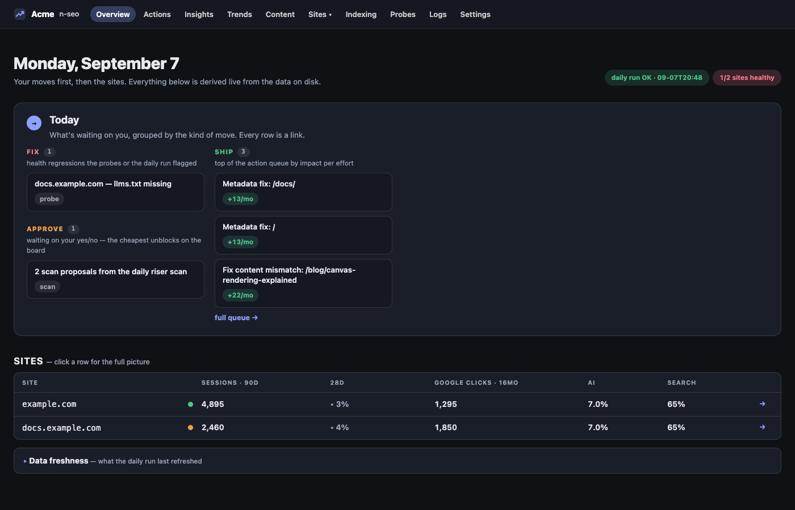
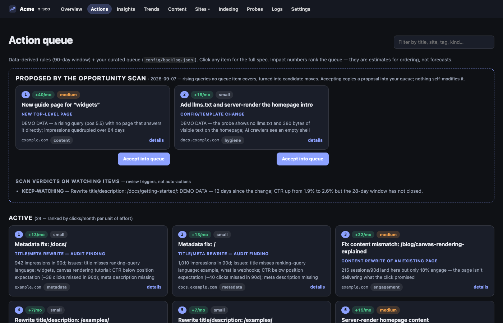
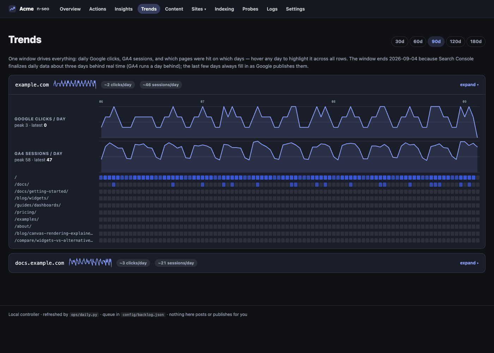
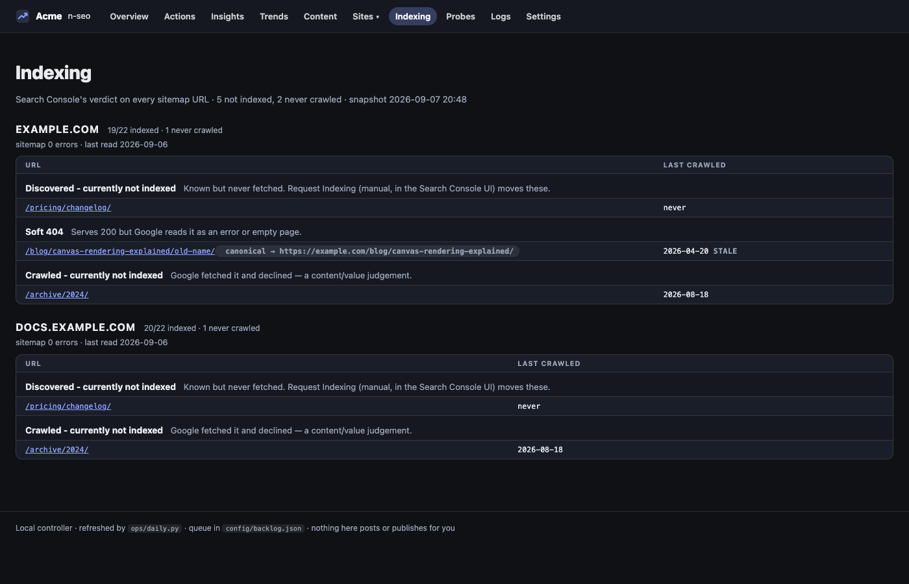
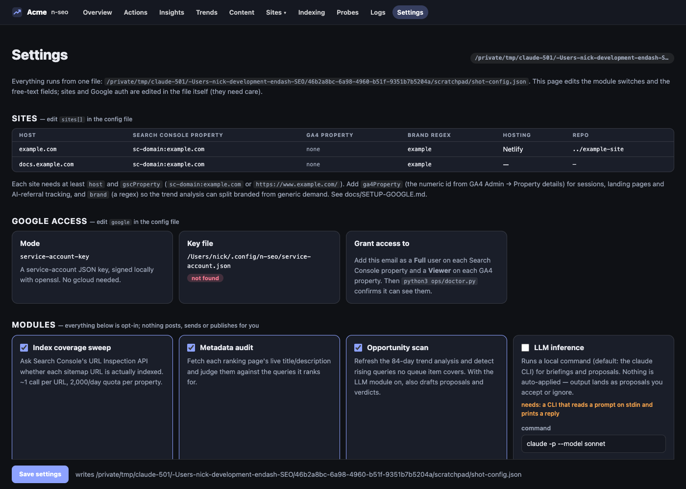

n-seo reads Search Console and GA4 every morning, probes your sites for what quietly broke, and hands you a ranked queue of concrete moves — with the numbers attached. Your data stays on your machine. It briefs you; it never posts for you.

The overview on demo data. Every row is a link; every number is derived live from files on your disk.
Nothing leaves your machine except calls to the Google APIs you authorize. No account, no SaaS, no telemetry.
Every card shows the queries, positions and impressions behind it, then the move, then a spec. You learn what actually moves the numbers.
No module edits your site, sends an email or posts a comment. Community modules write briefings. The words are always yours.
The demo dataset populates every page, so you can see what the tool does before you connect anything. Node 20+, Python 3.10+, curl and openssl are all it needs.
# see it working git clone https://github.com/en-dash-consulting/n-seo cd n-seo && npm install npm run demo # synthetic data for example.com npm start # → http://localhost:4600 # connect your sites cp n-seo.config.example.json n-seo.config.json python3 ops/doctor.py # checks key + access python3 ops/daily.py # the morning run, by hand
Every page, every card, every chart — populated. Poke around the queue, open a spec, toggle a module in Settings.
One Google service account, added as a user on Search Console and GA4. The key is signed locally with openssl — no gcloud, no pip installs. Step by step →
launchd on macOS, cron or systemd on Linux. It waits for the network, retries once, logs every step, and tells you when something failed. Scheduling →
In your own repo, your own way. The next morning's data says whether it worked, and the card moves to watching instead of disappearing.
Four planes. The first and second are automated; the third is you (or your AI agent); the fourth is what makes the second one honest.
Search Console (16 months and the trailing 90 days), GA4 sessions, sources and landing pages, per-page time series, URL Inspection verdicts for every sitemap URL, and a no-auth probe of each site: robots, sitemap, llms.txt, soft 404s, blocked AI crawlers, JS-only shells.
Rules over the 90-day window turn snapshots into actions: metadata that misses the ranking language, pages that rank well but rarely get clicked, queries sitting at position 5–15, landing pages that don't deliver what the click promised, traffic drops. Impact per unit of effort orders the queue.
Each card opens to the evidence, the move and a build spec. You change the title, add the section, fix the 404 — in your repo, on a branch, your way. Accept machine proposals into your queue with one click; nothing self-modifies it.
Shipped work becomes watching, never deleted. Watched pages are reported in the daily log; the scan judges whether a change succeeded, failed or needs more time. That feedback is how you hone your own principles.
Server-rendered, no bundler, light and dark. Compact, searchable, and split cleanly into active work and shipped work being measured.

Proposed → active → watching. Each card carries its evidence, the move, a spec and a success criterion. Filter by title, site, tag or kind.

One window drives everything: clicks per day, sessions per day, and which pages were hit on which days. Hover a day to highlight it across every row.

Search Console's verdict on every URL in your sitemap. Tells "nobody searches for this" apart from "Google has never fetched this" — they look identical in performance data.

One config file, edited from the page. Toggle modules, set the digest topics, describe your expertise for briefings, list the pages to watch.
Also: per-site pages (striking distance, CTR gaps, landing pages, AI-referral sources), Insights, Probes, Logs, Content (drafts, campaigns, participation briefings).
n-seo ships with an opinionated operating model. Each rule is a few lines you can read, argue with and change. The queue shows you why it thinks so, every time.
After you rewrite a page's title or description, leave it alone for four weeks. Churn reads as manipulation and resets Google's evaluation. Measure, then move.
Twenty-five title rewrites in one afternoon is a pattern. Stagger the batches across your sites.
Decisions ride the trailing 90 days so a fix you shipped last week stops being accused. The long window is for totals and history.
The clicks-per-month number on a card exists to rank the queue. It is not a promise, and the tool never reports it as one.
Done work stays on the board with a dated note until the data has spoken. Deleting it is how you forget what you learned.
Community participation is human. The tool finds the thread and briefs you on the gist, the debate and your genuine angle. It will not write the words.
A read-only MCP server exposes the queue, per-site metrics, the metadata audit, index coverage, trends and ops health. Claude Code picks it up from the repo's .mcp.json with no setup; Claude Desktop and other clients use stdio or an authenticated HTTP endpoint.
Read-only is the point: an agent can reason over your search data all day and still cannot bypass the freeze, the batching, or you.
15 tools, 3 doc resources, every one annotated read-only. MCP docs →
Everything beyond the core pulls is off until you turn it on. Nothing here posts, sends or publishes on your behalf.
| Module | What it does | Needs | Default |
|---|---|---|---|
| Index coverage sweep | URL Inspection verdict for every sitemap URL | Search Console access | on |
| Metadata audit | Fetches each ranking page's live title and description, judges them against the queries it ranks for | — | on |
| Opportunity scan | 84-day trend refresh; rising queries no queue item covers become candidates | — | on |
| LLM inference | Turns candidates into proposals and watched items into verdicts; writes digest briefings | any CLI that reads a prompt on stdin — claude -p by default | off |
| Hacker News digest | Finds fresh threads in your expertise areas and briefs you on each | your HN username | off |
| Reddit digest | Same for subreddits | a free Reddit "script" app's credentials | off |
| IndexNow | Key generation and pings to Bing / Copilot / Yandex on publish | — | off |
| Static export | Snapshot the dashboard to HTML for a mirror behind your own auth | — | off |
| Git auto-commit | Commit the daily log after each run | a git remote, optionally | off |
| Notifications | Desktop notification when a step fails | macOS | off |
Run the demo, connect a site, read the queue tomorrow morning.